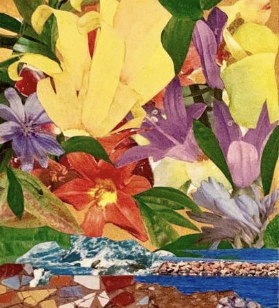
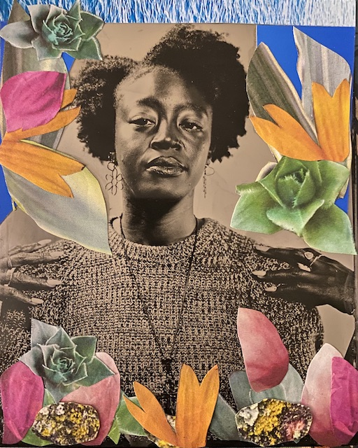
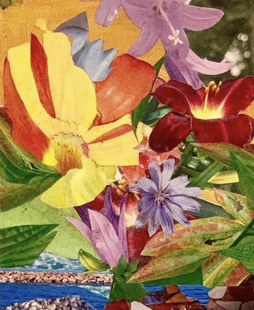

Artist Statement
Through collected travel experiences, exchanges, and environments I create mixed media paintings and collages that explore the detailed beauties and wonders of people and spaces.
By deconstructing and fusing photographs, blended landscapes and mappings are formed that highlight an appreciation to nature, its purpose, its tactile characteristics. While every
city holds its own essence, I highlight the parallels and uniqueness of places around the world.